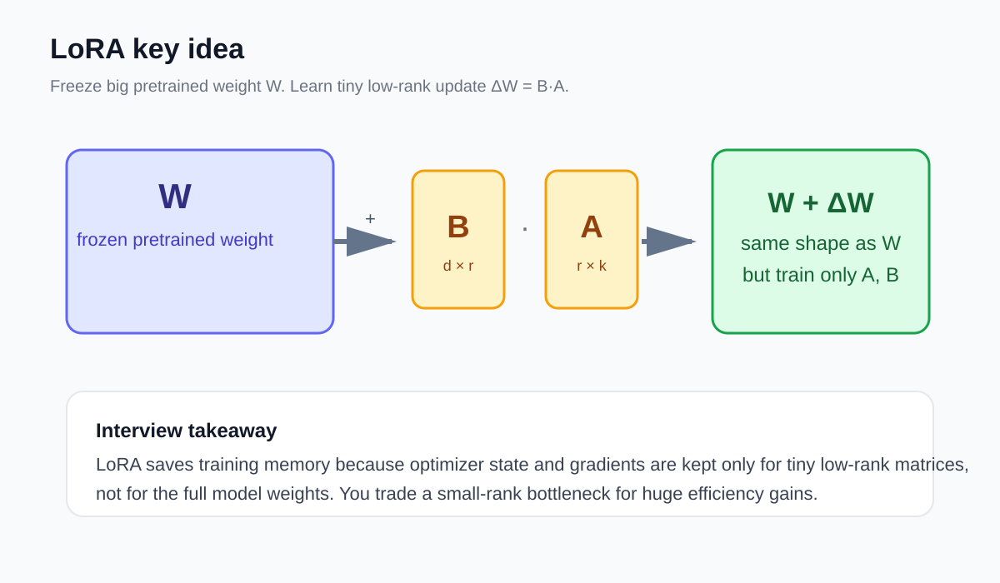
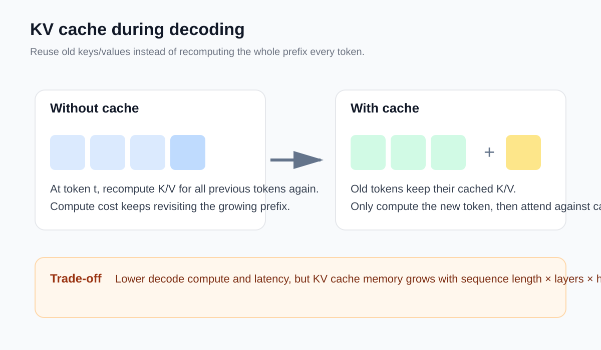
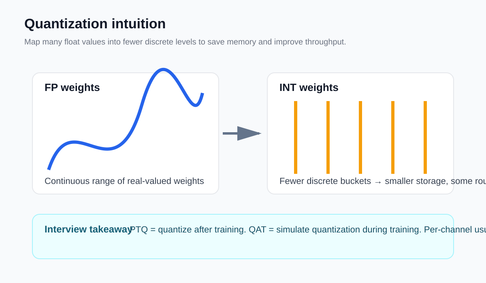
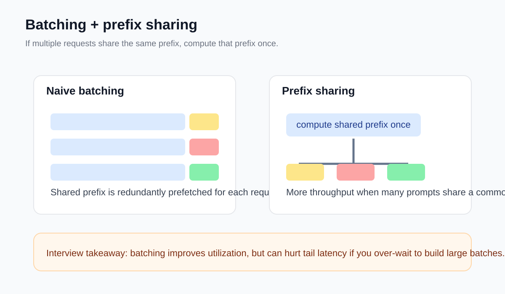

The mental model to remember is: full fine-tuning updates everything; LoRA keeps the base weights frozen and learns a tiny rank-limited correction.

This is the highest-yield intuition: KV caching reduces repeated compute during decoding, but the cache itself becomes a memory bottleneck.

Remember the trade: smaller storage and potentially faster kernels, at the cost of approximation error. Then be ready to talk PTQ vs QAT and per-tensor vs per-channel.

Batching is not just “more requests at once.” In LLM serving, the interesting question is whether requests share enough structure that you can amortize expensive work.